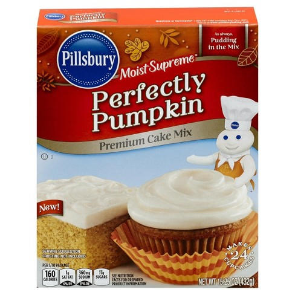
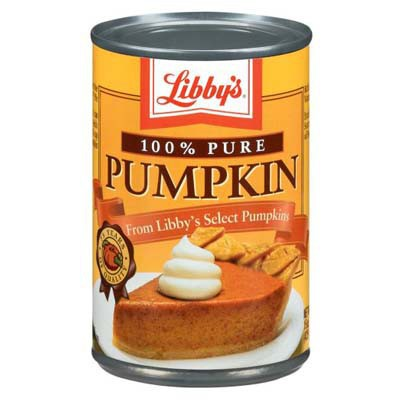
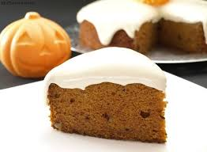
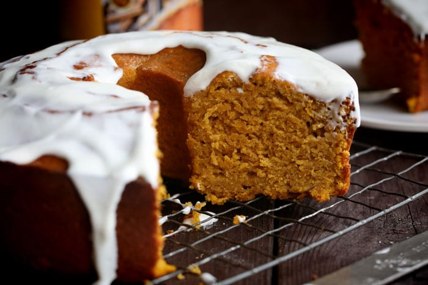

Pastel de Calabaza 🎃
Ingredientes
Glaseado Casero
- 1 cucharadita de vainilla
- 1/3 de mantequilla (temperatura ambiente)
- 2/3 taza de azúcar glass
- 1/3 de queso crema (temperatura ambiente)
Pastel de Calabaza
Si quieres ahorrar tiempo puedes usar la harina Pumpkin Spice de Pillsbury (puedes buscar una parecida tanto marca Betty Crocker o Duncan Hines) y solo sigue las instrucciones del empaque y glaséalo

Pero te diré que de la siguiente forma queda más sabroso
- 425 g de Relleno de calabaza para pay

-
3/4 taza de azúcar granulada
-
3/4 taza de azúcar morena
-
1 barra de mantequilla (suave)
-
4 huevos grandes (temperatura ambiente)
-
1 cucharadita de extracto de vainilla
-
3 tazas de harina
-
1/2 cucharadita de sal
-
1/2 cucharadita de bicarbonato de sodio
-
1 cucharadita de polvo para hornear
-
2 cucharaditas de canela
-
3/4 taza de leche (temperatura ambiente)

Instrucciones
- Precalienta el horno a 350°F que serían 176°C
Glaseado
- Combina todos los ingredientes del glaseado con ayuda de una batidora de base hasta que se incorporen totalmente y no tenga grumos.
Pastel de Calabaza
-
Engrasa con mantequilla y espolvorea harina en el molde que vas a utilizar
-
Coloca la azúcar granulada, la azúcar morena y 1/2 taza de mantequilla en el recipiente donde vas a batir los ingredientes. Bátelos a velocidad mediana de 3 a 5 minutos hasta que esté bien mezclada.
-
Agrega los huevos y mezcla
-
Revuelve el relleno de calabaza y la vainilla
-
Combina harina, canela, polvo para hornear, bicarbonato de sodio y la sal en el tazón y mézclalo bien.
-
Agrega la leche y mezcla bien
-
Con una cuchara vacía la mezcla en el molde que ya preparaste con harina y mantequilla
-
Hornéalo a 350°F (176°C) por 55 minutos, has la prueba del palillo de dientes (introduce el palillo en el pastel y si sale limpio es tiempo de retirarlo del horno). Deja enfriar por 10 minutos y luego saca el pan del molde y déjalo enfriar por completo.
-
Una vez que este completamente frio coloca el glaseado sobre el pastel, te puedes ayudar con una espátula. No coloques el glaseado con el pan caliente o solo se absorberá, si lo colocas cuando esta frio incluso se vera mas espeso y eso es lo que buscamos.

Si les gustó compártanlo con sus amigos en sus redes sociales para que no sean los únicos gorditos del grupo.
Mis Herramientas de trabajo
Laptop: Acer Aspire R15 Convertible
Cámara: Nikon D5300
Celular: Oneplus 3T